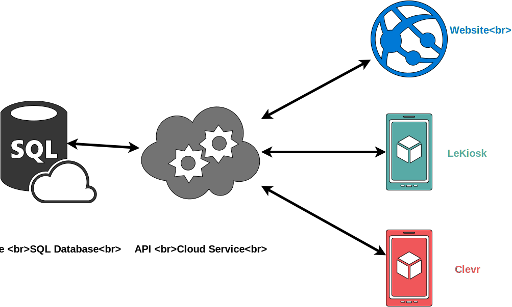
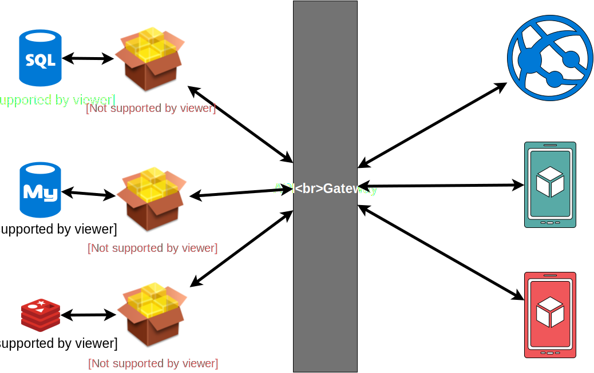
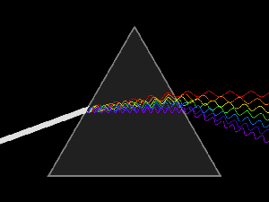
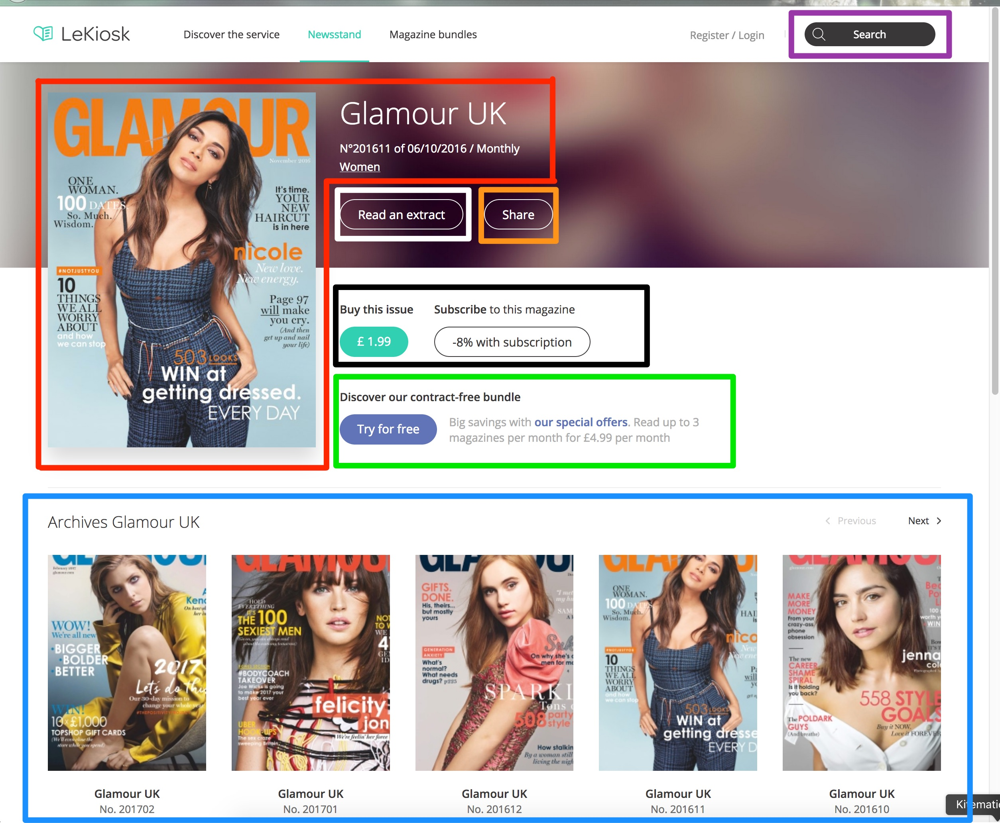
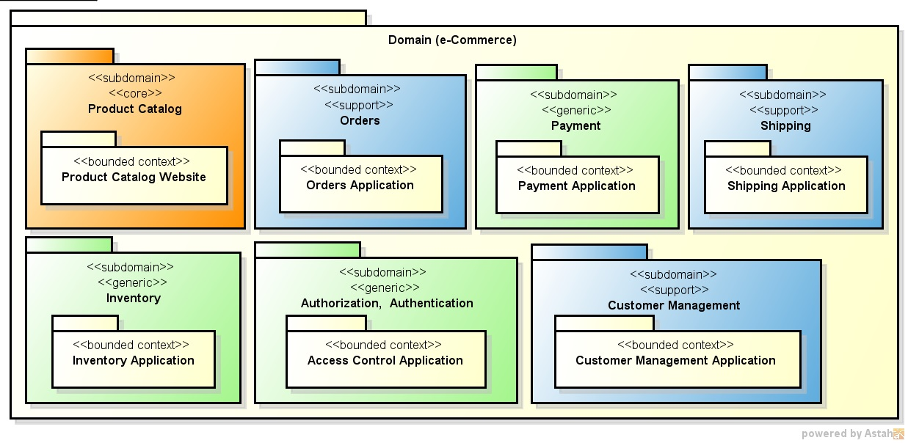
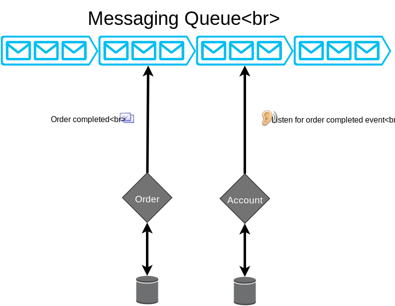

Microservices
How to migrate from a monolithic system
Created with ♡ by El Mehdi Benmoha for LeKiosk
Monolith
1 element (monoslithos en grec)
MicroServices
n elements
LeKiosk Monolith

Simple to develop
Simple to deploy
Simple to scale
1D scaling
New developers intimidated
Hard Continous deployment
Long-term commitement to a technology.
Microservice architecture

Loosely coupled
Collaborating services
Fast deployment
Isolation
No more long-term commitement to a technology.
Overhead of creating a distributed system
Deployment complexity
Increased memory consumption
Decomposing the monolith

Decompose by business capabilities

Decompose by DDD subdomain

Database decomposition
Join data through services
Command Query Responsibility Segregation (CQRS)
